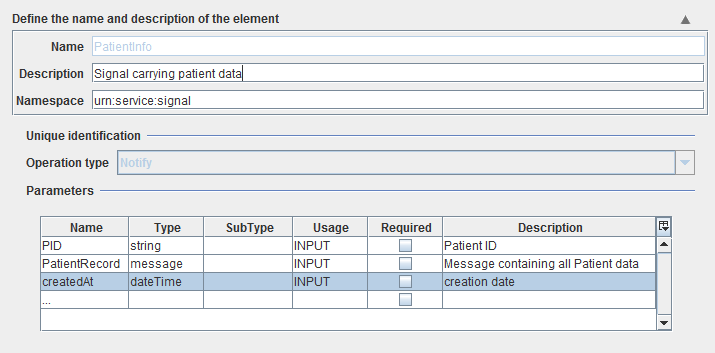
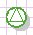

Signals

Topic content
Description
Signals describe the occurrence of an abstract event.
Purpose of object
Signals are stored on the Orchestra signal-bus to interconnect different processes. A signal can be, for example, created from one process and can be the start-event of another process.
Configuration
The dialog to configure the signal looks like:

•Name - The name chosen before is shown here.
•Description - It is possible to add a description here.
•Operation type - Signals are special form of service interfaces; for signals this field always has the value Notify
•Parameters - The named values to be transferred with this signal
Step by Step
1.The signals can be found in a folder in the area Scenario Elements.
2.By right clicking, the Context Menu can be opened. In which, create can be chosen.
3.Insert a name and a description for the signal. Click on Finish.
4.The signal will now be opened to be edited. Parameters can be defined here.
5.To send the defined signal, there must be an event in the process model.
6.To define, which signal is send, double click on the image and choose it from the drop down menu.
7.If the signal has parameters, they need to be defined in event properties.
8.To receive a signal, there must be an event in the process model.
 |
Receive a signal and start a process. Details |
9. To define, which signal shall be received, double click on the image and choose it from the drop down menu.
10. To specialize, which signals start the process, define the event filter.
11. In Process variables you can define all used process variables.